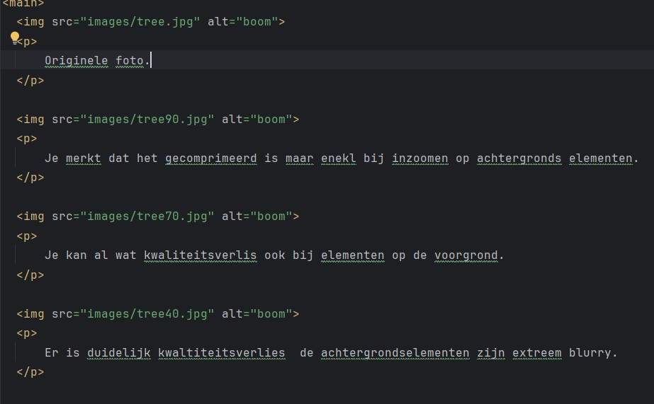
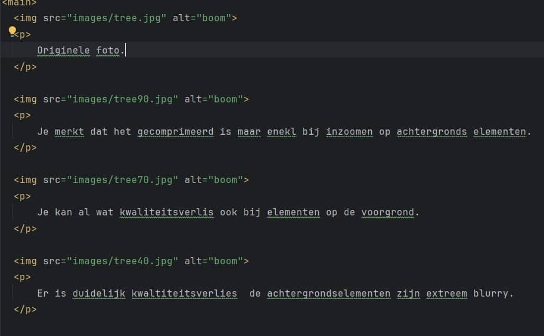
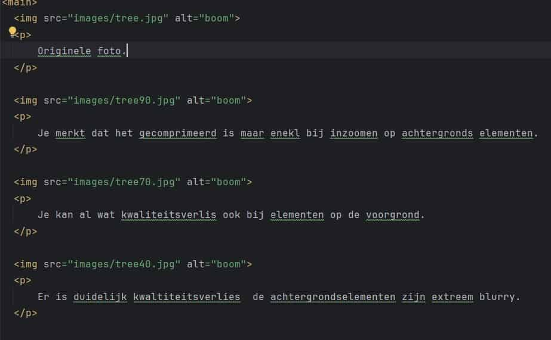

Originele foto.
Je merkt dat het gecomprimeerd is maar enekl bij inzoomen op achtergronds elementen.

Je kan al wat kwaliteitsverlis ook bij elementen op de voorgrond.
Er is duidelijk kwaltiteitsverlies de achtergrondselementen zijn extreem blurry.
Originele
De tekst is nog altijd leesbaar maar waaziger
De tekst is heel wazig maar nog leesbaar